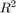
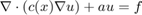
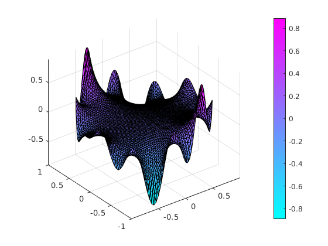
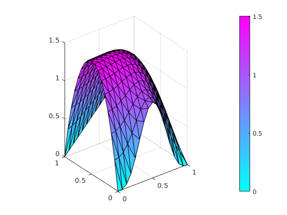
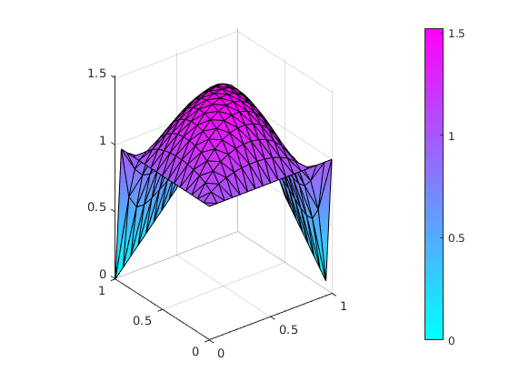
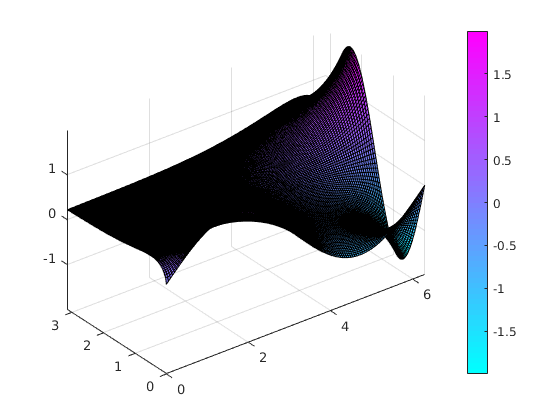

A boundary value problem in 
Contents
First Example
Define the pde. For an elliptic PDE

clc
We use Elliptic class.
elliptic = Elliptic()
elliptic =
Elliptic with properties:
fem: []
grid: []
odeOptions: [1×1 struct]
solverOptions: [1×1 struct]
time: []
y: []
A: []
b: []
D: []
nTimeSteps: 0
Define an unit circle
elliptic.grid = UnitCircle(0.125)
elliptic =
Elliptic with properties:
fem: []
grid: [1×1 UnitCircle]
odeOptions: [1×1 struct]
solverOptions: [1×1 struct]
time: []
y: []
A: []
b: []
D: []
nTimeSteps: 0
For linear elements on 2D domain use Lagrange12D
elliptic.fem = Lagrange12D()
elliptic =
Elliptic with properties:
fem: [1×1 Lagrange12D]
grid: [1×1 UnitCircle]
odeOptions: [1×1 struct]
solverOptions: [1×1 struct]
time: []
y: []
A: []
b: []
D: []
nTimeSteps: 0
Note when using linear elements, don't call extendMesh. Otherwise, an exeption will be thrown.
%Refine the mesh two times uniformly
elliptic.grid.refineUniformly(2)
Define Dirichlet boundary conditions
elliptic.setBoundaryConditions(... 'Dirichlet','sin(s*4).*sin(7*s).*sin(s)');
Call initialize. Parameters are diffusity c = 1, a = 0 and source f = 0.
elliptic.initialize(1,0,0);
Solve linear proeblem. Use Algebraic multigrid solver by 'AMG'. Note that AMG needs Ilupack. If Ilupack is not availiable, try 'LINEARGAUSS' or 'LINEAR' solver.
elliptic.solve('LINEARGAUSS');
User defined solver: LINEARGAUSS Re-order matrix using reverse Cuthill-McKee reordering ... done. Solve using mldivide ... done. Spend 0.009451 seconds for solving pde problem.
Create (if there is no figure 1) and clear the figure.
figure(1)
clf
Plot the result. Since the mesh is rather fine, we use "LineStyle" = 'none' to supress printing the black edges of the triangles.
elliptic.plot('LineStyle','-'); colormap cool %%%%%%%%%%%%%%%%%%%%%%%%%%%%%%%%%%%%%%%%%%%%%%%%%%%%%%%%%%%%%%%%%%%%%%%
Second example.
PDE on unit square with P2 elements and mixed Boundary conditions
This class uses stiff-spring technique to involve Dirichlet boundary conditions. For an example using Lagrange multiplier technique use
elliptic = EllipticLagrange();
%
Define an L-shaped domain.
elliptic.grid = UnitSquare(0.125);
For using P2 elements you must first extend the mesh
elliptic.grid.extendMesh;
% Use now P2 elements
%
elliptic.fem = Lagrange22D();
The L-Shaped object created by Lshape class has six boundary segments. You can check how many boundary segments a geometry has by calling elliptic.grid.nBoundarySegments. The method elliptic.grid.identifyBoundarySegment provides a figure where the boundary segments can be identified by color and number.
Three Dirichlet, one Neuman BC.
elliptic.setBoundaryConditions(... 'Dirichlet','sin(pi*s).^3',... 'Dirichlet','y',... 'Dirichlet','x',... 'Neumann','0');
Call initialize. Parameters are diffusity c = 0.1, a = 0 and source f = 10.
elliptic.initialize(1,0,10);
Warning: Two or more Dirichlet boundary segments have common points. In this case, the boundary value function may be not continuous. The value tha appears first in the arguments will be taken, the second apperaring will be ignored.
Solve linear proeblem. Use Algebraic multigrid solver by 'AMG'. Note that AMG needs Ilupack. If Ilupack is not availiable, try 'LINEARGAUSS' or 'LINEAR' solver.
elliptic.solve('LINEARGAUSS');
User defined solver: LINEARGAUSS Re-order matrix using reverse Cuthill-McKee reordering ... done. Solve using mldivide ... done. Spend 0.001276 seconds for solving pde problem.
Create (if there is no figure 1) and clear the figure.
figure(1)
Plot the result. Since the mesh is rather fine, we use "LineStyle" = 'none' to supress printing the black edges of the triangles.
elliptic.plot('LineStyle','-'); colormap cool %%%%%%%%%%%%%%%%%%%%%%%%%%%%%%%%%%%%%%%%%%%%%%%%%%%%%%%%%%%%%%%%%%%%%% % Use Lagrange Multiplier to involve Dirichlet BCs elliptic = EllipticLagrange(); %
Define an L-shaped domain.
elliptic.grid = Lshape(0.1251);
For linear elements on 2D domain use Lagrange12D
elliptic.fem = Lagrange12D();
Note when using linear elements, don't call extendMesh. Otherwise, an exeption will be thrown.
%Refine the mesh two times uniformly % elliptic.grid.refineUniformly(2);
The L-Shaped object created by Lshape class has six boundary segments. You can check how many boundary segments a geometry has by calling elliptic.grid.nBoundarySegments. The method elliptic.grid.identifyBoundarySegment provides a figure where the boundary segments can be identified by color and number.
Since we want to have the same boundary condition on all six segments, we can use the simple call
elliptic.setBoundaryConditions(... 'Dirichlet','1',... 'Dirichlet','y',... 'Neumann','0',... 'Neumann','0',... 'Dirichlet','x',... 'Dirichlet','1'... );
Call initialize. Parameters are diffusity c = 0.1, a = 1 and source f = 10.
elliptic.initialize(1,0,10);
Warning: Two or more Dirichlet boundary segments have common points. In this case, the boundary value function may be not continuous. The value tha appears first in the arguments will be taken, the second apperaring will be ignored.
Solve linear proeblem. Use Algebraic multigrid solver by 'AMG'. Note that AMG needs Ilupack. If Ilupack is not availiable, try 'LINEARGAUSS' or 'LINEAR' solver.
elliptic.solve('AMG');
User defined solver: AMG Spend 0.065828 seconds for solving pde
Create (if there is no figure 1) and clear the figure.
figure(1)
Plot the result. Since the mesh is rather fine, we use "LineStyle" = 'none' to supress printing the black edges of the triangles.
elliptic.plot('LineStyle','-'); colormap cool %%%%%%%%%%%%%%%%%%%%%%%%%%%%%%%%%%%%%%%%%%%%%%%%%%%%%%%%%%%%%%%%%%%%%%%%
Use as Utility
use lowlevel methods to compute the matrices for the linear system and solve it explicitely by using bachslash.
Don't use a pde object
start wth the domain, here a Racktangle with recktangular elements.
grid = RectangleR(0, 2*pi,0, pi);
grid.refineMesh;
grid.makeBoundaryMatrix(...
grid.dirichletBC,...
grid.dirichletBC,...
grid.robinBC,...
grid.robinBC);
Choose Bilinear elements
fem = Bilinear2D;
[K,M,F] = fem.assema(grid,10,1,0);
bp1 = grid.getBoundaryPointsIndexPerSegment(1);
bp2 = grid.getBoundaryPointsIndexPerSegment(2);
r = [sin(grid.x(bp1)),2*sin(-2*grid.y(bp2))] ;
[H,R] = fem.assembDataDirichlet(grid,1,r);
[Q,G] = fem.assembDataRobin(grid,1,0);
y = (K+M+1e3*(H'*H)+Q)\(F+1e3*(H'*R)+G);
figure(1)
clf
grid.plot(y)
Warning: Two or more Dirichlet boundary segments have common points. In this case, the boundary value function may be not continuous. The value tha appears first in the arguments will be taken, the second apperaring will be ignored.